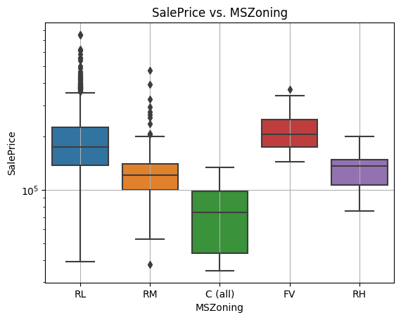
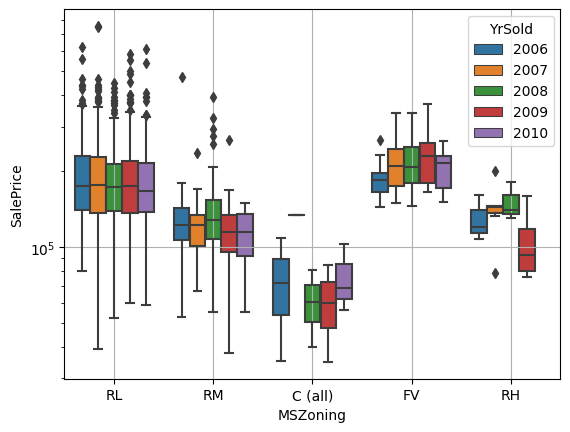
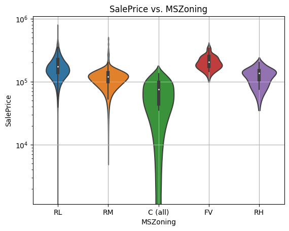
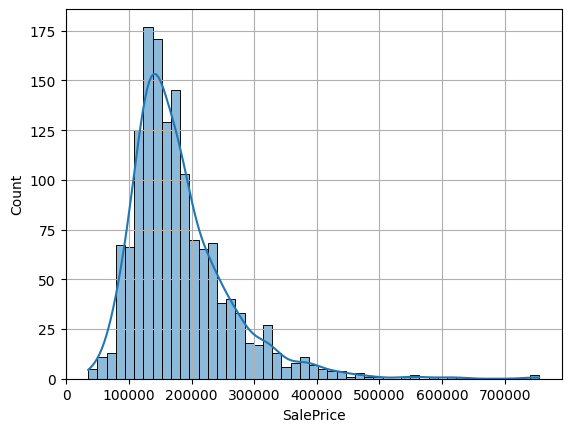
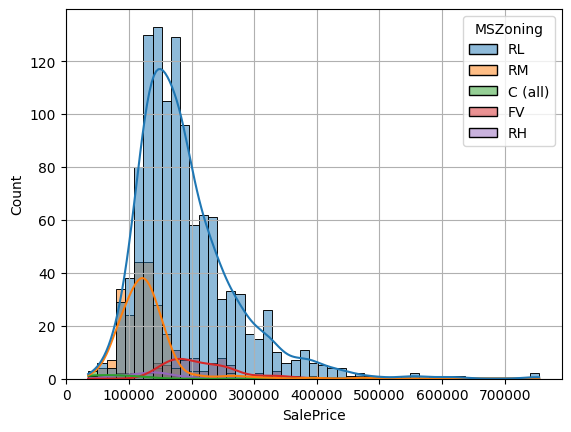

import numpy as np
import pandas as pd
import matplotlib.pyplot as plt
import seaborn as sns
from numpy.random import default_rng
#!pip install gapminder
#from gapminder import gapminder8 Regression, seaborn
Correlation and Regression as well as a quick exploration of the seaborn visualization capabilities
#new library
import statsmodels.api as sm
import statsmodels.formula.api as smf#or
url ="https://drive.google.com/file/d/1hzvcubf2B8PKtjG4OAcytQKwOlESkBvW/view?usp=sharing"
url='https://drive.google.com/uc?id=' + url.split('/')[-2]
df = pd.read_csv(url)
df.head()| Id | MSSubClass | MSZoning | LotFrontage | LotArea | Street | Alley | LotShape | LandContour | Utilities | ... | PoolArea | PoolQC | Fence | MiscFeature | MiscVal | MoSold | YrSold | SaleType | SaleCondition | SalePrice | |
|---|---|---|---|---|---|---|---|---|---|---|---|---|---|---|---|---|---|---|---|---|---|
| 0 | 1 | 60 | RL | 65.0 | 8450 | Pave | NaN | Reg | Lvl | AllPub | ... | 0 | NaN | NaN | NaN | 0 | 2 | 2008 | WD | Normal | 208500 |
| 1 | 2 | 20 | RL | 80.0 | 9600 | Pave | NaN | Reg | Lvl | AllPub | ... | 0 | NaN | NaN | NaN | 0 | 5 | 2007 | WD | Normal | 181500 |
| 2 | 3 | 60 | RL | 68.0 | 11250 | Pave | NaN | IR1 | Lvl | AllPub | ... | 0 | NaN | NaN | NaN | 0 | 9 | 2008 | WD | Normal | 223500 |
| 3 | 4 | 70 | RL | 60.0 | 9550 | Pave | NaN | IR1 | Lvl | AllPub | ... | 0 | NaN | NaN | NaN | 0 | 2 | 2006 | WD | Abnorml | 140000 |
| 4 | 5 | 60 | RL | 84.0 | 14260 | Pave | NaN | IR1 | Lvl | AllPub | ... | 0 | NaN | NaN | NaN | 0 | 12 | 2008 | WD | Normal | 250000 |
5 rows × 81 columns
Seaborn Graphs
sns.boxplot(df, y = "SalePrice", x = "MSZoning");
plt.yscale("log");plt.grid();
plt.title("SalePrice vs. MSZoning");
Multiple Groups
sns.boxplot(df, y = "SalePrice", x = "MSZoning", hue = "YrSold");
plt.yscale("log");
plt.grid();
plt.title("SalePrice vs. MSZoning");
Violin Plots
sns.violinplot(df, y = "SalePrice", x = "MSZoning");
plt.yscale("log");plt.grid();
plt.title("SalePrice vs. MSZoning");
Histograms
sns.histplot(data=df, x="SalePrice", kde=True);plt.grid();
sns.histplot(data=df, x="SalePrice", kde=True, hue = "MSZoning");plt.grid();
Tasks:
Regression/Correlation (Housing Data)
- Look up the
pairplotfunction and create pairwise scatter plots of
- 5-7 hand-picked numerical features, one of them being
SalePrice - Hint: look at
dtypes
- Choose the row with
SalePriceand pick two reasonably strong correlations.
- Compute the correlation coefficients
- Fit a simple regression line (with
statsmodels) for each and visualize them usingregplot - Fit a multiple regression by including both explanatory variables and compare the coefficients
df.dtypes != "object"Id True
MSSubClass True
MSZoning False
LotFrontage True
LotArea True
...
MoSold True
YrSold True
SaleType False
SaleCondition False
SalePrice True
Length: 81, dtype: booldf.columns[df.dtypes != "object"][1:]Index(['MSSubClass', 'LotFrontage', 'LotArea', 'OverallQual', 'OverallCond',
'YearBuilt', 'YearRemodAdd', 'MasVnrArea', 'BsmtFinSF1', 'BsmtFinSF2',
'BsmtUnfSF', 'TotalBsmtSF', '1stFlrSF', '2ndFlrSF', 'LowQualFinSF',
'GrLivArea', 'BsmtFullBath', 'BsmtHalfBath', 'FullBath', 'HalfBath',
'BedroomAbvGr', 'KitchenAbvGr', 'TotRmsAbvGrd', 'Fireplaces',
'GarageYrBlt', 'GarageCars', 'GarageArea', 'WoodDeckSF', 'OpenPorchSF',
'EnclosedPorch', '3SsnPorch', 'ScreenPorch', 'PoolArea', 'MiscVal',
'MoSold', 'YrSold', 'SalePrice'],
dtype='object')Extra Credit
Modeling Missing Values Titanic Data
- detect the missing values
- replace the NAs in survived with the estimate grouped by sex
#titanic
titanic = sns. load_dataset('titanic')
titanic["3rdClass"] = titanic["pclass"]==3
titanic["male"] = titanic["sex"]=="male"
#titanic.head()
#Introduce some missing values
rng = default_rng()
missingRows = rng.integers(0,890,20)
print(missingRows)
#introduce missing values
titanic.iloc[missingRows] = np.nan